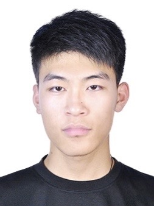
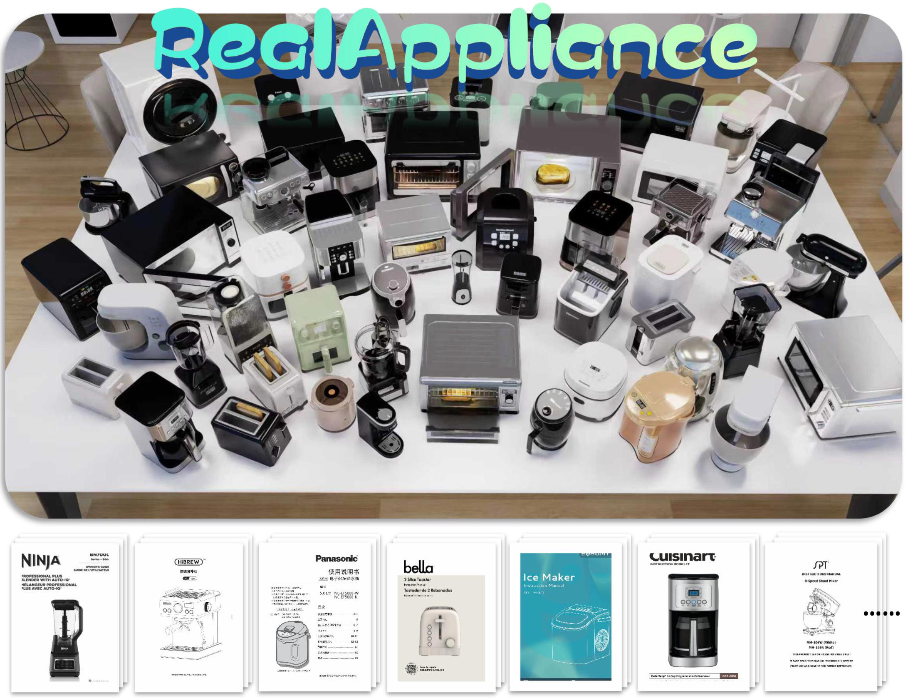
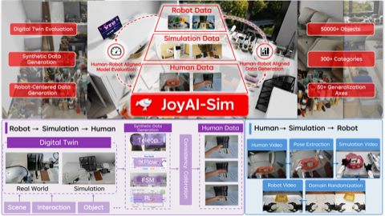
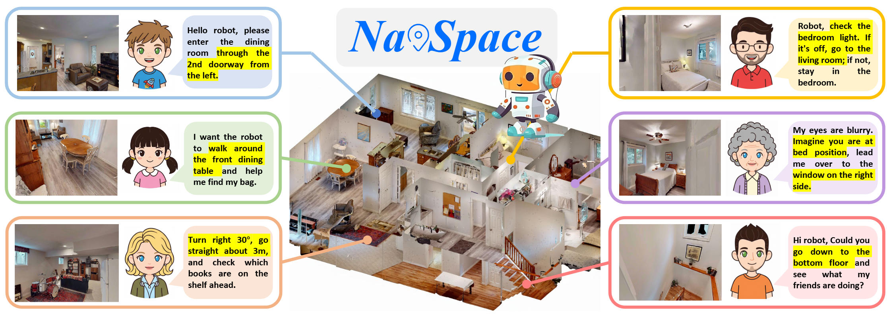

|
康雷个人主页已迁移至根域名：
https://niko-kang.github.io/
Lei Kang | 康雷
康雷（Lei Kang / Kang Lei）— 北京大学硕士研究生，研究方向：具身智能、机器人学习、视觉-语言-动作模型（VLA）与仿真数据生成。
I am a second-year master's student at
Peking University,
advised by
Prof. Yunfeng Xiao.
I received my bachelor's degree in Computer Science from
Beijing Jiaotong University.
My research focuses on embodied intelligence,
robot learning, vision-language-action models,
and simulation-based data generation and evaluation.
I am particularly interested in building controllable, scalable, and physically grounded
environments for training and evaluating generalist robot policies.
Email:
nikola@stu.pku.edu.cn
Email
/
Github
/
Google Scholar
|

|
关于康雷
康雷（Lei Kang / Kang Lei），北京大学计算机学院硕士研究生，研究兴趣包括
具身智能、机器人学习、视觉-语言-动作模型（VLA）、
仿真数据生成与评测。代表工作包括 CVPR 2026 Highlight 论文 RealAppliance、ICRA 2026 论文 NavSpace，
以及 embodied simulation 相关工作 JoyAI-Sim。
这是康雷（Lei Kang）的个人学术主页，用于展示研究论文、项目与联系方式。
English version is available above.
News
-
Jun 2026:
Our paper JoyAI-Sim is available on arXiv.
-
2026:
RealAppliance is accepted to CVPR 2026 as a Highlight.
-
2026:
NavSpace is accepted to ICRA 2026.
Selected Publications
|

|
RealAppliance: Let High-fidelity Appliance Assets Controllable and Workable as Aligned Real Manuals
Yuzheng Gao*, Yuxing Long*, Lei Kang, Yuchong Guo, Ziyan Yu,
Shangqing Mao, Jiyao Zhang, Ruihai Wu, Dongjiang Li, Hui Shen, Hao Dong
CVPR 2026, Highlight
Paper
/
Project
CVPR Highlight
Embodied AI
Appliance Digital Twins
Simulation
High-fidelity controllable appliance digital twins aligned with real manuals for embodied interaction,
instruction following, state-aware operation, and realistic appliance evaluation.
|
|

|
JoyAI-Sim: A Simulation-Enabled Interconversion Toolchain for the Embodied Data Pyramid
Peidong Liu, Yongce Liu, Songyan Guo, Fuyuan Ma, Zhihao Yuan, Ao Li, ...,
Lei Kang, Junwu Xiong, Jiawei Li, Hui Shen, Yicheng Gong,
Nan Duan, Liang Lin
arXiv, 2026
Paper
/
Project
Embodied Simulation
Robot Data
Digital Twin
Evaluation
A simulation-enabled interconversion toolchain for human-robot aligned model evaluation and data generation,
connecting robot trials, simulation, and human demonstrations through reusable cloud-based infrastructure.
|
|

|
NavSpace: How Navigation Agents Follow Spatial Intelligence Instructions
Haolin Yang*, Yuxing Long*, Zhuoyuan Yu, Zihan Yang, Minghan Wang,
Jiapeng Xu, Yihan Wang, Ziyan Yu, Wenzhe Cai,
Lei Kang, Hao Dong
ICRA 2026
Paper
/
Project
ICRA
Navigation
Spatial Intelligence
Embodied Agents
A benchmark and model for evaluating how navigation agents understand and follow spatial intelligence instructions.
|
Internships
-
Jul 2025 - Present,
JD Technology
-
Apr 2025 - Jul 2025,
Center on Frontiers of Computing Studies, Peking University
Services
More information will be updated soon.
Selected Awards and Honors
- Siyuan Times Special Scholarship of Beijing Jiaotong University, 2019
- First-Class Scholarship, 2019, 2020
- Merit Student of Beijing Jiaotong University, 2019, 2020
康雷（Lei Kang）| Peking University | Embodied AI & Robotics
Last updated: July 2026.
|